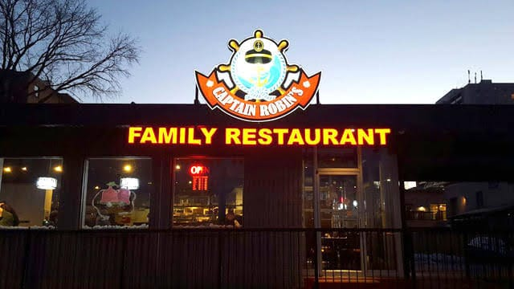
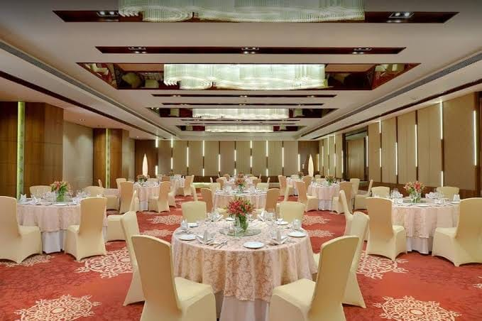
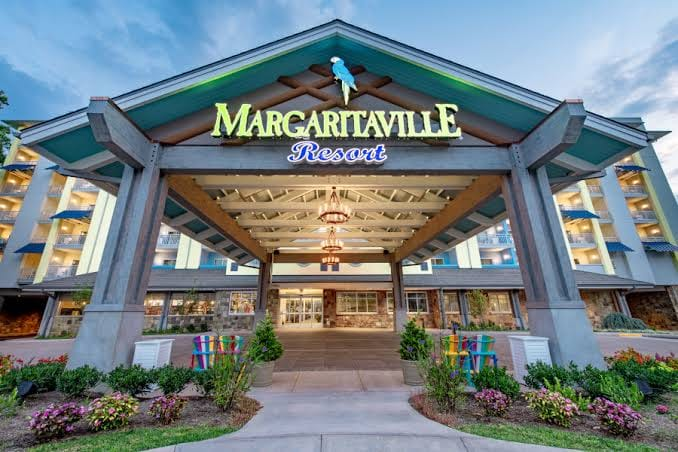
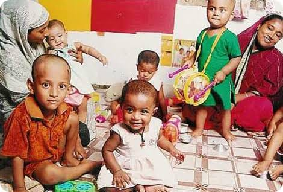

Restaurents can donate thir excess food, despite an increased national focus on food waste still a toss a startling 94% of their excess food.Wasted food is painful to see, especially when you need to be so careful to control costs and run a tight operation in other ways.

Banquet
Banquet or halls where differnt family fuctions and get-together are organised.Large number of people are gatherd for brunch or dinner. so food left over can be donate.

Resorts
Resorts are the the places where destination wedding fuctions are organized by the rich people, In thousands of number people are invited and food volume is also high. So they can donate extra food.

NGO'S
NGO'S can recieve these food, so they can have tasty meal with proper nutrition.

Slum Areas
Slum area people are not having proper financial conditional to purchase quality of food which is necessary for the body to work.So by donating food to them they can have a nutrious meal a day.